A free shutdown utility
Created by Jorgen Bosman
Made in Belgium
Poweroff is a small program that allows you to control the power state of your
pc.
It can power off, shutdown or reboot your pc, log you off, lock your
workstation, go to standby or hibernation mode and even wake up another pc.
All actions can be done locally or on a remote pc (if they are running
poweroff).
The action can be performed immediately or scheduled, by using a built-in
scheduler.
All actions and options can be controlled by command line options. This way, you can
easily integrate poweroff in your batch files.
It should run on Windows 95/98/Me/NT4.0/2000/XP, each with its own limitations. Beware
that I haven’t tested the program on these operating systems, but in theory it should
work on all of them…
Since this release has been completely rewritten from scratch, it may be
possible that it still contains some bugs. Please let me know if you find
one.
Full source code is included!
Installation is very easy, just extract the
poweroff.exe file somewhere where you can find it and double-click the
executable. You do not need any of the other files in the zip file, unless
you are interested in the source code.
To uninstall, simply delete the poweroff.exe file. Poweroff stores its settings
in the registry, so you should remove them also, either by selecting
‘Remove settings’ from the file menu or by manually removing them from
the registry using ‘regedit.exe’
(WARNING: using regedit can damage your Windows configuration, so be careful what
you do!). The key that you can safely delete is
HKEY_CURRENT_USER\SOFTWARE\Poweroff
When poweroff starts up, it first looks for settings in HKEY_CURRENT_USER. If it cannot
find any, then it looks in HKEY_LOCAL_MACHINE. This way you can define global
settings and per user settings. You will have to create the global settings manually.
To delete the poweroff service, choose ‘Remove service’ from the service
menu. The settings are automatically removed. To manually remove the
service settings, delete the registry key
HKEY_LOCAL_MACHINE\SYSTEM\CurrentControlSet\Services\Poweroff\Parameters
Other registry keys that may be lying around then the service is removed are:
HKEY_LOCAL_MACHINE
\System\ControlSet00x\Services\PowerOff
HKEY_LOCAL_MACHINE \System\ControlSet00x\Enum\Root\LEGACY_POWEROFF
These should disappear when your computer is
rebooted. They can be safely deleted when the service is removed.
You need Internet Explorer 4.0 or higher because it uses some common controls
that are shipped with IE.
When you double-click the poweroff executable, the main window is shown. Here you can select which action to perform and select the appropriate options. To execute the desired action, simply hit the ‘Do it’ button.
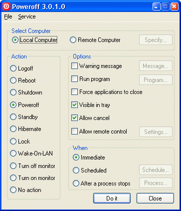
Figure 1
Poweroff supports the following actions:
Logs off the current logged on user.
Reboots the computer.
Shutdown the computer.
In NT/2000/XP this will display the standard message ‘It is safe to shutdown
you computer’.
In Win9x/Me this will poweroff your pc if your hardware supports it
This action will physically power off your
computer. Your hardware must support this, for example an ATX motherboard and
power supply should support it, but an old AT motherboard probably
doesn’t support it. You also have to have ACPI or APM enabled in your bios.
And the power options must be correctly configured in the Windows control
panel. If Windows performs a poweroff when you do a normal Windows shutdown
from the start menu, then it will also work with this program.
To enable poweroff in Windows NT, you will need a hal.dll that is capable of
shutting down your workstation. You can try one that's supplied with
service pack 4 (or higher): hal.dll.softex
Just extract the service pack (with the /x option),
There are several machine-specific HAL.DLL’s, and you MUST extract the
matching HAL*.DLL.SOFTEX from the service pack. To avoid problems when
someone overwrites the good HAL.DLL with a bad one it's better to rename HAL*.DLL.SOFTEX
to %SystemRoot%\System32\HALPOWER.DLL for instance, copy the line in
%SystemDrive%\BOOT.INI which loads the current system, alter the description
and append " /HAL=HALPOWER.DLL". Now one can choose between the
two HALs and has a fallback if the new one fails.
If you like NT to automatically poweroff at shutdown, set the following registry key to 1: HKEY_LOCAL_MACHINE\Software\Microsoft\Windows NT\CurrentVersion\Winlogon\PowerdownAfterShutdown
If your pc supports it, then this will put your pc into standby mode (sleep mode). If you get a strange error message, then probably one of your device drivers doesn’t support standby. Standby is not supported on NT.
If your pc supports it, then this will put your pc into hibernate mode. If you get a strange error message, then probably one of your device drivers doesn’t support hibernate. You also have to have hibernation enabled in your power settings of the Windows control panel (Windows 2000 or above). Hibernate is not supported on Windows 95 or NT.
This action will lock your workstation. This is only supported on Windows 2000 or above.
This action allows you to start up a remote pc.
This remote pc must support Wake-On-LAN. This means that you have to have a
network card that is connected via an extra wire to the motherboard (or
power supply) to provide some power. In the system BIOS, Wake-On-LAN must
also be enabled.
How it works:
The network card constantly monitors the network for a ‘Magic Packet’ when
the computer is switched off. This magic packet is a series of bytes that
is sent over the network. A magic packet consists of a header (6*0xFF)
and the MAC address of the network adapter repeated several times (16
times), for example if your MAC address is 01:02:03:04:05:06 (6 bytes),
then the magic packet looks like this:
FFFFFFFFFFFF010203040506010203040506010203040506010203040506010203040506010203040506010203040506010203040506010203040506010203040506010203040506010203040506010203040506010203040506010203040506010203040506
The nework adapter recognizes the sequence and triggers the power supply to turn on
the computer.
This action will put monitor in standby (powersaving) mode. You need a monitor that is capable of this feature.
This action will turn on power to your monitor (get it out of stanby/powersaving mode). You need a monitor that is capable of this feature.
Performs no action on the pc. Useful for only giving a warning message or running a program.
When this radio button is selected, then the action is performed on the local computer. This radio button is unavailable when the action is Wake-On-LAN. This is because there’s no way that you can turn on your own computer...
When this radio button is selected, then the action is performed on a remote computer. You have to click the ‘Specify’ button to specify on which remote computer to perform the action.
When the action is anything else than Wake-On-LAN,
you are presented with the following dialog box:
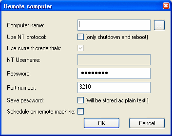
Figure 2
Computer name: This is the name (or ip
address) of the remote computer
Use NT protocol: When you select this,
then the standard NT protocol/authentication is used to reboot or
shutdown the remote computer. These are the only two options supported
in this mode!
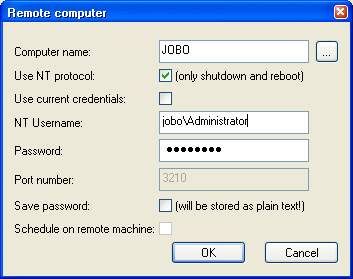
Figure 3
You have to specify whether you want to use the credentials of the user that you used to log into Windows. In that case, you don’t have to supply a username and password.
If your current account is not allowed to shutdown the remote machine, then you can specify another username and password to connect to the remote machine that has the rights to shutdown the machine. This username can be a username of your current domain, then you only need to specify the username and password. If the user is from a different domain or the remote computer’s local domain, then you have to prefix the username with the domain name (e.g.: DOMAIN\Username), see figure 3.
Note that if you currently have a drive mapping or printer mapping to the remote machine, you cannot specify another username, this is an NT restriction.
This mode is only supported from and to NT/2000 computers. No Windows 9x/Me support!
When you do not select the 'use nt protocol' checkbox, then poweroff must be running on the remote machine, either as a service or interactive with the ‘Allow remote’ option enabled.
When that is the case, then all actions are possible on the remote machine and it doesn’t matter which version of Windows is running there. Of course, you can still only perform actions that the remote OS supports…
Password: Here you can specify the password that gives you access to the remote machine, leave blank if no password was specified by the remote poweroff program.
Port number: Here you can specify the port number where the remote poweroff program is listening to
Save password: When you save your settings in the main poweroff screen, then the password for the remote machine is also saved. This will store the password as plain text in the registry!
Schedule on remote machine: When you don’t use NT authentication, then you can choose to do scheduling locally or on the remote machine. If you choose remote scheduling, then poweroff must be running on the remote machine and you can stop your local poweroff when the action has been submitted to the remote machine. Otherwise, you have to leave your local poweroff program running until the time arrives.
When the action is ‘Wake-On-LAN’, then you are
presented with the following dialog box:
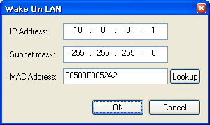
Figure 4
You have to specify the remote computer’s IP address, subnet mask and MAC address.
The IP address and subnet mask are necessary to calculate the broadcast address.
The magic packet is only broadcast to the right subnet. The MAC address is the
physical hardware address of the computer’s network adapter. You can
click the ‘Lookup’ button to find the hardware address. This performs a
ping to the remote computer and then looks into the arp table for the IP
address. This means that the lookup may not always work correctly. If the
lookup fails, then you must get the MAC address from the remote computer
itself by inspecting the network adapter’s properties. The MAC address is
a series of 12 hexadecimal
numbers. Some adapters may display the MAC address as XX-XX-XX-XX-XX-XX, but
in poweroff it must be specified without the dashes. This feature will only work
on a LAN, not on a WAN or the internet.
Executes the desired action immediately when you press the ‘Do it’ button.
Executes the action at a certain moment in time.
Click the ‘Schedule’ button to specify when to execute the action.
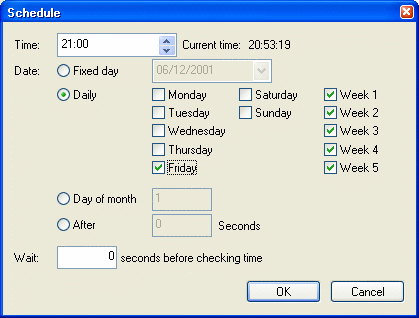
Figure 5
In the time field, you can specify the time when
the action must be performed. The time format is hh:mm (0-23 hours).
The date radio box lets you choose the days on which the action must be
performed:
Fixed day: Performs the action only once on the specified date. The date format is dd/mm/yyyy
Daily: Performs the action on the days of the week that you specify. You can also select the weeks of the month on which to perform the action. For example you may choose to reboot your pc at each Friday of weeks 1 and 3. This option requires that you install the poweroff service.
Day of month: Performs the action on a specific day of the month each month. For example you may choose to reboot your pc every 1st of the month. This option requires that you install the poweroff service.
After x seconds: Performs the action after the
specified number of seconds.
Executes the action when some running process finishes. Click the ‘Process’ button to specify the process.
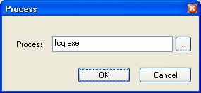
Figure 6
Here you can type the exact process name or choose the name from the current process list by clicking the ‘…’ button.
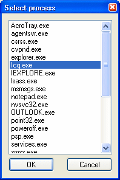
Figure 7
Poweroff will poll the running processes every second. When the specified
process is not running, the action will be executed. This can be useful for
shutting down your pc when a certain program has finished or even as a
watchdog to reboot the pc when a program that should be running has died.
With this option you can give a warning message to
the user before performing the
action. Click the ‘Message’ button to specify the message properties:
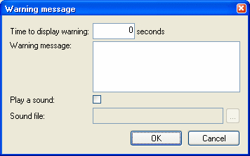
Figure 8
You can enter the number of seconds that the
warning message must be shown. When the seconds have passed, then the
action is performed.
You can also specify the message text that must be shown.
If you want a sound to be played when the dialog box is shown, then you can
select the ‘Play a sound’ checkbox. Then you must also specify the
sound file that must be played. If the action must be performed on a remote
computer, then the sound file must also exist on the remote computer!
This option allows you to run a program before the action is executed. This can be useful to properly shutdown some other program before shutting down your pc. Click the ‘Program’ button to enter the program options:
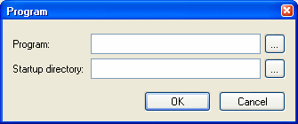
Figure 9
You must enter the program that must be executed,
or choose it from a list by clicking the ‘…’ button. You can also
specify the startup directory for the program of select it from a list by
clicking the ‘…’ button.
If you need to run multiple programs, then you should put them inside a batch
file and then call the batch file from within poweroff.
This option is useful for forcing running
applications to close. Otherwise some applications may not exit when
Windows is shut down because they popup a dialog box or because they
’hang’. This option kills all running programs before logging off, rebooting,
shutdown or poweroff.
This also implies that any changes made in running programs will not be saved,
so for example if you have a text editor open with unsaved changes, then
the editor will be closed without asking you to save the changes!
When this option is selected, then the poweroff icon will be visible in the system tray when the ‘Do it’ button has been pressed and a non-immediate action has been selected. Otherwise, poweroff will seem to have disappeared and there’s no way to make it reappear.
When this option is selected, then you will be able to cancel any chosen action (except when ‘Immediate’ execution is selected). You will be able to cancel the action from the system tray and in the warning dialog (if those options are set).
When this option is selected, then other computers can connect to your pc and remotely perform all actions that poweroff supports on your pc remotely. This is useful when running poweroff as a service and when you’re the network administrator, then you can reboot remote machines from your pc. Click the ‘Settings’ button to specify remote control options:
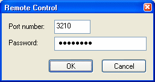
Figure 10
You can specify the TCP port number where poweroff listens for connections. You can also specify a password that remote computers must enter before they gain access to your pc. This password is encrypted and stored in the registry.
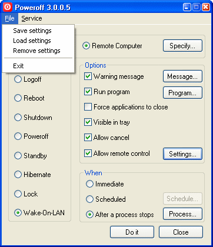
Figure 11
Save Settings: This saves the current settings to the registry. The next time you start poweroff, it will read these settings from the registry so that you don’t have to set your preferred settings again.
Load Settings: This reads the settings from the registry and overwrites any changes made.
Remove Settings: This removes all settings from the registry and restores the default settings.
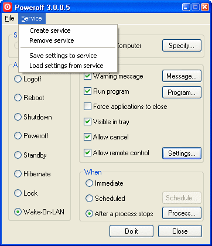
Figure 12
Create service: This creates the poweroff service. This makes poweroff run in the background and can even run when you’re not logged on. The current settings are saved to the registry so that the service can run with these settings. When the ‘visible in tray’ option is selected, then the poweroff service is accessible via the system tray. The service will only execute some action when the ‘Scheduled’ option is selected, otherwise poweroff will just start up and will be visible in the system tray (if that option was selected of course).
Remove service: This removes the poweroff service. If the service is currently running, it is stopped (only on NT/2000/XP). On 95/98/Me you will have to reboot in order to stop the service. Removing the service will also remove the service settings.
Save settings to service: This will save the current settings to the service. On NT/2000/XP, the service will also be restarted to pick up the new settings. On 95/98/Me, you will have to reboot for the service to pick up the changes.
Load settings from service: This will read the service settings from the registry and make them the current settings.
If you have Windows NT/2000/XP, then you can always check the event log (application log) for messages from poweroff. Here you can find information and error messages about the actions that were performed.
You can control every option and setting from the command-line. This makes poweroff excellent for use in batch files. Some options have changed since previous releases, so check your batch files! If you do poweroff /?, you will get an overview of all the options (look above for a description of all the settings):
Usage: poweroff action [options] Actions: logoff, reboot, shutdown, poweroff, standby, hibernate, lock, wol, monitor_off, monitor_on or no_action Options: -warn : Show a warning message before doing the action -warntime s : Show the warning message for s seconds -playsound : Play a sound when the warning is displayed -soundfile “f” : Specifies the .WAV file that must be played -msg "m" : Specifies the warning message, use \n for a newline character -force : Force applications to close -wait s : Wait s seconds before checking the time -remote m : Do the action on the remote machine m (name or ip) -remschedule : Do the scheduling on the remote machine -use_nt : Use the NT protocol to shutdown/reboot a remote machine -port p : Use port p to connect to the remote machine -username u : User NT username u to connect to the remote machine -password p : Use password p to connect to the remote machine -run : Run a program before doing the action -program "p" : Runs program p before doing the action -directory "d" : Start the program in directory d -notray : Do not show poweroff icon in the system tray -nocancel : Do not allow the user to cancel the action from the tray or in the warning dialog -immediate : Perform the action immediately (default) -scheduled : Perform the action in a scheduled manner -time hh:mm : Perform the action at the specified time -date dd/mm/yyyy: Perform the action on the specified date -days [m,t,...] : Perform the action on the spcified days of the week (m,t,w,th,s,su) -weeks [1,..,5] : Perform the action on the spcified weeks (default=all weeks) -day d : Perform the action on the specified day of the month (1-31) -seconds n : Perform the action after n seconds -process p : Perform the action when a process named p does not exist anymore -ip ip : Specifies the ip adress for WOL -subnet s : Specifies the subnet mask for WOL -mac m : Specifies the mac address for WOL -allow_remote : Allow remote control -remote_port p : Listen on port p for commands -remote_pswd p : Set a password that clients must give for remote control -simulate : Simulate all actions, do not perform them -minimize : Start minimized in the system tray -quiet : Don't display error messages -save_settings : Saves current settings to the registry -remove_settings: Remove the settings from the registry -save_svc_set : Save current settings to the service -remove_svc_set : Removes the service settings -create_service : Creates the poweroff service, including the settings -remove_service : Removes the poweroff service, including the settings -debug : Start poweroff in debug mode
Examples:
The following command shuts down the pc after giving a 10 second warning.
C:\poweroff\poweroff poweroff -warn -warntime 10
-msg "You will be logged off in 10 seconds"
The following command creates a service that shuts down the pc everyday at
23:00, forces all applications to close, gives a warning to the user, plays
a sound file when the warning dialog is shown and listens for remote
control using a password:
C:\poweroff\poweroff poweroff -warn -warntime 60 -msg "You pc will poweroff
in 60 seconds\nPlease save your work" -playsound -soundfile
"d:\winnt\media\ringin.wav" -force -scheduled -time 23:00 -days
m,t,w,th,f,s,su -allow_remote -remote_pswd password -create_service
The following command will shutdown a remote computer using the standard NT protocol:
C:\poweroff\poweroff shutdown -remote computer -use_nt -username
computer\administrator -password password
The following command will reboot the computer after a program (cmd.exe) has finished:
C:\poweroff\poweroff reboot –process cmd.exe
The following command will wake up a remote computer:
C:\poweroff\poweroff wol –ip 10.0.0.1 –subnet
255.255.255.0 –mac 0050BF0852A2
The following command will log off the user 60 minutes after logging on when the command
is put inside the startup folder. The user will not be able to see that poweroff
is running and will not be able to cancel it:
C:\poweroff\poweroff logoff –scheduled –seconds 3600 –notray –nocancel
–force
This command simply powers off your computer:
C:\poweroff\poweroff poweroff
You can remotely control poweroff by starting it as a service and setting the ‘Allow remote control’ option. You can control it by using poweroff itself and selecting a remote computer, or you can control it by using telnet to the port where poweroff listens on (default 3210). For example telnet computer 3210. You’ll see a welcome message like this:
201 Welcome to Poweroff 3.0 created by Jorgen Bosman
Poweroff uses a protocol like ftp or smtp with
commands and reply codes. You enter a command and poweroff will reply with
‘2xx message’ on success or ‘5xx message’ on error.
You can enter the following commands:
QUIT Terminates the connection HELP Shows this help PASSWORD p Authenticates the client with a password ACTION a The action to perform (logoff, reboot, shutdown, poweroff, standby, hibernate, lock, wol, monitor_off, monitor_on, no_action) WHO w Who must perform the action (local, remote) WHEN w When must the action be performed (immediate, scheduled, after_process) SIMULATE s Simulate the action (on, off) COMPUTER c The remote computer name MAC m The remote computer mac address (WOL) IP i The remote computer ip address (WOL) SUBNET s The remote computer subnet mask (WOL) WARNING w Show warning before doing the action (on, off) WARNTIME w The number of seconds to show the warning MESSAGE m The warning message PLAYSOUND p Play a sound when showing the warning (on, off) SOUNDFILE s The WAV file to play RUNPRG r Runs a program before doing the action (on, off) PROGRAM p The program to run DIRECTORY d The startup directory for the program SCHEDULE s The type of schedule (fixed_day, daily, day_of_month, after_x_seconds) TIME t The time when to do the action (hh:mm) DATE d The date when to do the action (dd/mm/yyyy) DAYS d The days of the week when to do the action (m, t, w, th, f, s, su) WEEKS d The weeks of the month when to do the action (1, 2, 3, 4, 5) DAY d The day of the month when to do the action (1-31) WAIT w The number of seconds to wait before checking the time SECONDS w The number of seconds to wait before doing the action PROCESS p Wait for process p to finish FORCE f Force applications to close (on, off) CANCEL c Allow the user to cancel the action (on, off) SHOW Show current settings VERSION Show current poweroff version DOIT Do the action STOP Stops the current scheduled action Example: telnet computer 3210 201 Welcome to Poweroff 3.0.0.5 created by Jorgen Bosman action logoff 250 OK warning on 250 OK message You will be logged off in 10 seconds 250 OK warntime 10 250 OK doit 250 OK quit 201 Bye bye Connection closed by foreign host.
When poweroff is minimized or it has a scheduled action, it sits in the system tray. You can right click the icon, then a popup menu appears:
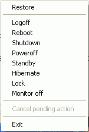
Figure 13
Restore: Restores the main window and removes poweroff from the system tray. Only available when not executing a scheduled action.
Logoff/Reboot/Shutdown/Poweroff/Standby/Hibernate/Lock/Monitor off: Quickly performs the action requested. If the allow cancel option is disabled, then the action is performed immediately.
Cancel pending action: Cancels a scheduled action and restores the main window again. Only available when a scheduled action is executing and the ‘Allow cancel’ option is activated.
Exit: Quits poweroff
V3.0.1.3: 10-08-2003
Standby/Hibernate should now allow wake up events.
Fixed bug with -debug option when started as a service.
V3.0.1.2: 04-08-2003
Fixed problem with event log filling up with 'invalid window handle' messages.
Added scheduled action tooltip when poweroff is minimized to the tray.
V3.0.1.1: 31-07-2003
poweroff now also should leave focus to running program in win95/98/Me when starting with command-line action or minimized.
V3.0.1.0: 26-07-2003
Added 3 new actions: Turn off monitor, Turn on monitor and No action. (also on command-line and remote telnet commands) [only tested on XP]
Starting poweroff minimized no longer takes away focus of the running application
Choosing a quick action from the tray no longer asks for confirmation when the 'allow cancel' option was selected.
V3.0.0.17: 31-03-2003
Fixed bug: choosing WOL after the 'use nt' options was selected would return error.
Added more logging with -debug option.
V3.0.0.16: 31-02-2003
The -save_svc_set commandline option now automatically restarts the service if it is running.
Added the STOP command in a telnet session.
V3.0.0.15: 05-08-2002
Implemented workaround for Windows bug: Logoff while nobody was logged on caused Windows XP to display an empty screen and you were forced to turn off power. Poweroff now checks if a user is logged on before trying to logoff the user.
V3.0.0.14: 27-07-2002
Fixed crash with new hibernate support
Added -debug command line option to easily turn on debugging
When the new hibernate/standby method fails, poweroff now tries the old method again.
V3.0.0.13: 24-07-2002
Added hibernate support for Win98/Me systems.
V3.0.0.12: 11-07-2002
Moved buttons a little bit
Enabled the poweroff action in Windows 95/98/Me. Some people reported that the system didn't poweroff with the normal shutdown action. Maybe this action does the trick.
V3.0.0.11: 27-05-2002
Fixed 'Invalid time specified' bug when doing remote action with scheduled 'after x seconds' time.
V3.0.0.10: 08-04-2002
Fixed memory leak and improved performance a little bit when polling for running processes under win9x
Main window can be closed and minimized again
V3.0.0.9: 26-02-2002
Fixed keyboard navigation. You can now move around the main dialog again with the keyboard.
V3.0.0.8: 23-02-2002
Removed the use of gethostbyaddr() because it seems that this call queries the DNS server. This causes a problem when you do not have a DNS server configured.
V3.0.0.7: 16-02-2002
Fixed a bug when \n\n was specified inside the warning message on the command-line
You can now escape \n with \\n if you want to put "\n" inside the warning message
If you just specified -remote m , then the default port number was 0. Now it's 3210.
Added the possibility to generate lots of debug information. You can turn on debugging by creating a registry value HKEY_CURRENT_USER\Software\JoBo\Poweroff\debug of type DWORD and by giving it a value of 1. If you use the poweroff service, you can enable debug for the service by creating a registry value HKEY_LOCAL_MACHINE\System\CurrentControlSet\Poweroff\Parameters\debug of type DWORD and by giving it a value of 1. Then restart the service. Poweroff should now create a file called poweroff.log in its startup directory.
V3.0.0.6: 02-02-2002
Added the possibility to enter a multiline message via the command-line by using \n as newline character
Added the -remschedule command-line argument
V3.0.0.5: 06-12-2001
Added a check on the schedule dialog box to see if at least one week has been selected
Added a busy cursor while sending the remote command.
V3.0.0.4: 16-11-2001
Fixed documentation bug
Moved the settings again to HKCU\Software\JoBo\Poweroff. Should I produce more programs that write to the registry, then they can all be stored under the same ‘JoBo’ branch.
V3.0.0.3: 14-11-2001
Added current time to the schedule dialog
V3.0.0.2: 12-11-2001
Settings are now stored by default in HKEY_CURRENT_USER
You can now create a service with ‘allow remote control’ without getting an error. This setting will now only work when poweroff is run as a service.
V3.0.0.1: 09-11-2001
Now uses different socket library so that it can be used with Win95
Fixed bug: Ordering of controls was wrong. This caused radio groups to be misaligned and caused the ‘visible in tray’ checkbox to be incorrectly turned off in win95/98/Me
Added full version number in title bar
Fixed bug: When poweroff is run as a service and ‘Visible in tray’ is off, then no icon is shown in the system tray
V3.0.0.0: 06-11-2001
Completely rewritten engine.
Added Wake-On-LAN.
Improved remote control, including NT authentication with another user and poweroff-to-poweroff communication which means that all poweroff features are available on the remote computer. With password protection.
You can now play a wav file when the warning dialog is shown.
You can cancel the action when the warning dialog is shown.
You can run a program when the action is about to be performed.
You can quickly execute an action from the system tray.
You can specify whether users can cancel an action or not.
It has a built-in scheduler, now you can schedule at a fixed date, daily, weekly or a day of the month.
It can run as a service (required for some schedules).
You can save your settings, so that you don’t have to fill them in each time you start poweroff.
Full command-line control.
You can wait for a process to finish before executing an action.
New icon (again).
Windows XP support for new visual styles.
V2.1: 25-05-2001
Added Standby (95/98/Me/2000), Hibernate (2000) and Lock (2000) actions
Improved event logging a little bit
Default time is now rounded to the next hour
V2.0: 14-04-2001
Added remote shutdown/reboot
Add warning dialog
V1.3.3: 15-03-2001
Added the command line option -w
V1.3.2: 12-12-2000
Added the command line option to specify a date (dd/mm/yyyy:HH:MM)
V1.3.1: 28-11-2000
Added event logging on NT/2000
V1.3: 19-05-2000
Added command-line option to specify a certain time (hh:mm)
V1.2: 03-03-2000
Added command-line parameters, so that you can use poweroff in batch files
V1.1: 27-05-1999
Added a date field
Added the current date and time
Added the Now button to immediately do the required action
Hide now adds an icon to the system tray. Double-click the icon to bring the screen back up.
Added a force checkbox. If checked, all applications terminate without warning.
Changed the format of the time to hh:mm:ss
The format of the date field is dd/mm/yyyy
Poweroff now also appears in the taskbar
V1.0: 08-05-1999
First release
Make sure that you have installed the poweroff service on the remote pc after enabling the 'allow remote' option. Also make sure that there's no firewall blocking the poweroff tcp port (default 3210). You can test it by doing a telnet to the remote pc on the poweroff port, you should get a welcome message.
Normally, the shutdown action will shutdown your pc and give the message 'It is safe to shutdown your pc'.The poweroff action should actually poweroff your pc. However, some pc's might act differently depending on their power settings.
No, with the current version, you cannot.
Not directly, but you can create a batch file that calls poweroff.exe with command-line options for each pc.
You can contact me for any questions, bugs,
enhancement requests, congratulations,… at the following coordinates:
If you want to thank me, please have a look at my goodies
whishlist!
Xjorgen.bosman@pandora.beX (remove X, and please DO NOT put me in your address
book!)
Home address:
Jorgen Bosman
Groot Hagelkruis 179F
2030 Antwerpen
Belgium
You can always find the latest version (and other tools) at:
http://users.pandora.be/jbosman/applications.html
The new direct download link for poweroff 3.0 is:
http://users.pandora.be/jbosman/pwroff30.zip
Poweroff 3.0 created by Jorgen Bosman
This is Freeware!